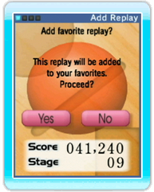

15 |
Sending and Receiving Replay Data |
 |
● Sending Replay Data Select Replays from the Main Menu, then select the replay-data record you want to use and select Send. Select the Wii Friend you want to send the replay data to. Select Yes on the Confirmation Screen to send the replay data to the selected Wii Friend. *You must be registered as each other’s Wii Friends before you can send replay data. The number of replay-data records you can send in one session is limited. If you are unable to send any more records, please try again the next time you play Maboshi's Arcade. ● Receiving Replay Data You will receive a message on your Wii Message Board when one of your Wii Friends has sent you Maboshi's Arcade replay data. Start the game to view the received replay data. ● Saving Received Replay Data  Up to 20 received replay-data records are saved automatically. If new replay data is received when there are already 20 records saved, the oldest record will be deleted to make room for the new one. Only one replay for each game mode from each Mii will be saved. If you receive a Mii’s new replay for the same game mode, the earlier data will be overwritten. To protect important replay-data records from being deleted this way, you should add them to your Favorites (see “Replay Data”). |
 |
 |
 |